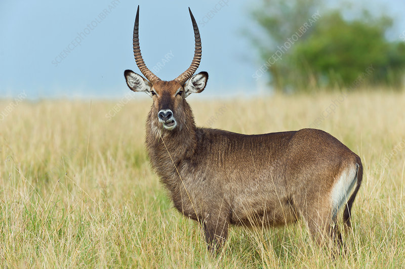

Meru national is one of the best parks in kenya. It is located east of Meru county. Meru antional park covers an area of about 870km2. It has abundant rainfall with 635-762 mm in the west of the park and 305-356mm in the east. Meru national park also has lush swamps that attract animals during the dry season. Famous environmentalist George and joy Adamson raised the famous lion Elsa in Meru national park and the park has gained huge popularity because of this. Elsa the lion inspired the creation of the famous documentary Born free. Meru national park also has many animal species in Meru national park and over 300 bird species. Here is a video showcasing Meru national park.
Some of the animals found here include:
1.lesser kudu
This great animal is found in east africa. The head and body length of this majestic animal is typically 110-140cm. Kudu weighs about 56-108kgs and are true browsers. They are mostly active at night and during dawn. Lesser kudu don't exhibit territorial behaviors and rarely fight. They are mostly found in dry,flat and heavily forested areas and Meru national park host this incredible creature because of its huge forests. Males are typically taller and heavier than females.

2.Water buck
A water buck is a large antelope that inhibit in most countries in sub-saharan africa including kenya. Water backs weighs an average of 161-262kg The first European who discovered it was Willium Ogilby,a naturalist. Males have a long spiral horn curved backward and then forward hence giving them a beautiful stature. Water bucks cannot tolerate dehydration and hence live in areas with abundant water.luckily,Meru national park is one of those areas and you will get to see them if you visit.
2.Spotted hyena
Also known as the laughing hyena,the spotted hyena is one of the most opportunistic animal in the world and are capable of stealing kills from lions and even killing them. Hyenas live in matriarchal societies led by a dominant,strong female(their matriarch). Males are the lowest in the rank and are actually smaller than the females. Though hyenas are considered scavengers,hyenas are actually superb hunters and hunt most of their prey. Actually,lions steals more food from hyenas more times than hyenas steal from lions. Hyenas have the strongest bite force of any mammal on the wild. Meru national park has many hyenas that live in huge clans and you will definitely spot them when you visit.

3.Leopard
Meru National park has many african leopards. Compared to other african big cats,leopards have relatively short legs and a long body with a large skull. Their body are covered by beautiful rosettes unique in every leopard. Leopards are true opportunists and survivors because they can eat almost anything,from small rats and birds to large male impala. Males are more muscular and larger than female and can weigh up to 90kg. The average weight of leopards is about 28-90kg. Leopards are very strong and should be treated with respect